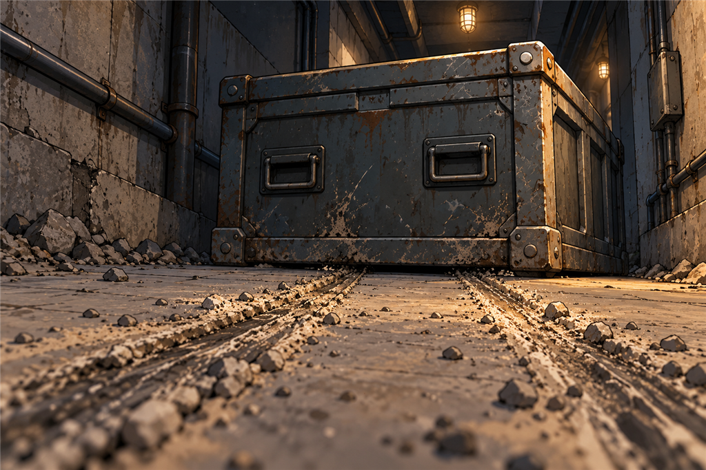
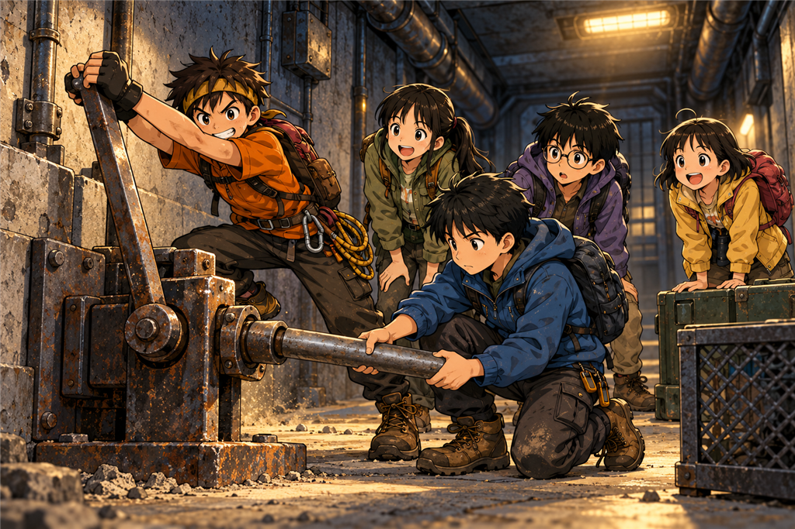

กล่องที่ยกไม่ขึ้น
เวลาอ่านประมาณ 12 นาที · Lever / Friction / Teamwork
เช้าวันที่สาม แสงสีเทาจาง ๆ ไหลลงมาตามบันไดยี่สิบสามขั้น
มันไม่ได้สว่างพอจะเรียกว่าสว่าง แต่พอจะทำให้ทุกคนเห็นหน้ากันได้โดยไม่ต้องเปิดไฟ
ต้นกล้ากดปุ่มโทรศัพท์ตัวเอง จอขึ้นมาแวบหนึ่งแล้วดับ เขากดอีกครั้ง คราวนี้ไม่ขึ้นเลย
“หมดแล้ว” เขาพูด
ไม่มีใครตกใจ เพราะทุกคนรู้มาตั้งแต่เมื่อคืนแล้วว่ามันจะหมด
“เครื่องมีนายังอยู่” นนท์บอก “แต่ปิดไว้เหมือนเดิม ใช้ตอนขึ้นไปข้างบนแล้วเจอสัญญาณเท่านั้น”
มีนาพยักหน้า แล้วเอาโทรศัพท์ที่ปิดอยู่ใส่กลับเข้ากระเป๋าในสุด
เหลือแหล่งแสงอยู่สองอย่าง คือแสงจากปากบันได กับโคมฉุกเฉินสีเขียวที่สว่างขึ้นทุกครั้งที่พื้นสั่น
ฟ้านั่งขึ้นแล้วเอามือลูบแขนตัวเอง “เมื่อคืนหนูฝันว่าครูมารับค่ะ”
ไม่มีใครรู้จะตอบยังไง
“เดี๋ยวครูก็มา” ต้นกล้าพูด
มีนามองเขาแวบหนึ่ง แล้วไม่พูดอะไร
1
นนท์กางแผนที่ออกบนพื้น แล้ววางหินทับมุมไว้สองก้อน
“เรามีงานหนึ่งอย่างที่ต้องทำให้ได้” เขาพูด “บอกคนข้างนอกว่าเนินฝั่งตะวันออกกำลังจะพัง”
“ง่ายสิ” ต้นกล้าตอบ “เราก็เดินกลับไปบอกครู”
“กลับทางไหน”
ต้นกล้าชี้ขึ้นบันได “ก็ทางที่เรามา”
“ทางที่เรามาคือฝั่งตะวันออก” มีนาพูดเบา ๆ
ต้นกล้าหยุดนิ่งไปสองวินาที
“…อ้าว”
“เราไม่รู้ด้วยซ้ำว่ามันจะพังเมื่อไร” ปั้นเสริม “อาจอีกสิบวัน อาจอีกสองชั่วโมง ข้อความไม่ได้บอก”
“แล้วถ้าเราเดินไปแล้วมันพังตอนเราอยู่บนนั้นล่ะคะ” ฟ้าถาม
ไม่มีใครตอบ
นนท์ลากนิ้วไปบนแผนที่ช้า ๆ “เราไม่รู้ทางอื่น เราไม่มีโทรศัพท์ที่ใช้ได้ เราไม่รู้ว่าครูอยู่ตรงไหน”
เขาเงยหน้าขึ้นมองห้องโถง
“แต่ที่นี่ไม่ใช่ถ้ำนะ มันเป็นสถานีที่คนสร้างไว้เพื่อเฝ้าดูภูเขา”
“แล้วไง” ต้นกล้าถาม
“ถ้าสถานีมีหน้าที่เฝ้าดู แปลว่ามันต้องมีวิธีบอกคนอื่นด้วย” นนท์ตอบ “ไม่งั้นเฝ้าไปทำไม”
ปั้นเงยหน้าขึ้นจากสมุดทันที “เครื่องที่วัดอะไรได้ ต้องส่งผลออกไปที่ไหนสักแห่ง”
“ใช่”
“แล้วมันอยู่ห้องไหนล่ะคะ” ฟ้าถาม
ทุกคนหันไปมองประตูสามบานพร้อมกัน
2
บานซ้ายยังมีหยดน้ำเกาะ และเปิดไม่ออกเลยแม้แต่นิดเดียว
บานขวาคือบานที่มีพัดลมดูดอากาศ ทุกคนตกลงกันตั้งแต่เมื่อคืนว่าจะไม่แตะมันจนกว่าจะรู้ว่าข้างในมีอะไร
เหลือบานกลาง บานที่อุ่นเล็กน้อย และเป็นบานที่เมื่อคืนมีเสียงเหมือนสวิตช์ตัวเล็ก ๆ ถูกสับทีละตัวดังมาจากข้างหลัง
นนท์วางฝ่ามือทาบบานประตูโดยไม่ดันน้ำหนักตัวลงไป “ยังอุ่นอยู่”
“อุ่นแปลว่ามีไฟฟ้าวิ่งอยู่ข้างในหรือเปล่าคะ” ฟ้าถาม
“อาจใช่ หรืออาจแค่มีท่อร้อนวิ่งผ่านหลังผนัง” มีนาตอบ “เรายังไม่รู้”
บานกลางไม่มีวงล้อแบบประตูด้านนอก มีแค่คันโยกเหล็กธรรมดากับบานพับที่ขึ้นสนิมเป็นคราบ
ต้นกล้าจับคันโยกแล้วออกแรงกด มันไม่ขยับ เขาออกแรงอีกครั้ง คราวนี้มีเสียงลั่นเบา ๆ
“อย่ากระชาก” นนท์บอก “ค่อย ๆ ออกแรงให้คงที่”
ต้นกล้าผ่อนมือ แล้วค่อย ๆ กดลงช้า ๆ สม่ำเสมอ
กรี๊ก…
คันโยกลงสุด ประตูขยับออกมาราวหนึ่งนิ้ว
ลมจากข้างในไหลออกมา ไม่เย็นเหมือนบานขวา แต่อุ่นและแห้ง มีกลิ่นฝุ่นกับกลิ่นโลหะร้อน ๆ จาง ๆ
พวกเขาทำแบบเดียวกับที่ทำกับประตูด้านนอกเมื่อวาน คือเปิดไว้แค่ช่องแคบ วางใบไม้แห้งดูทิศทางลม แล้วรอจนลมนิ่ง
“รอบนี้เรารู้แล้วว่าทำไมต้องรอ” มีนาพูด
พอลมนิ่ง นนท์ค่อย ๆ ดันประตูให้กว้างขึ้น
ข้างในไม่ใช่ห้อง แต่เป็นทางเดินแคบ ๆ กว้างพอให้คนเดินทีละคน เพดานต่ำกว่าห้องโถงจนต้นกล้าต้องก้มหัวนิดหนึ่ง
และสุดทางเดินสั้น ๆ นั้น มีของอยู่ชิ้นหนึ่งขวางอยู่เต็มช่อง
3
มันเป็นกล่องเหล็กทรงสี่เหลี่ยม สูงประมาณอกของฟ้า กว้างเกือบเท่าช่องทางเดินพอดี
ผิวด้านนอกเป็นเหล็กทาสีเทา มีมุมเสริมหนา มีหูหิ้วสองข้างที่บิดงอไปแล้วข้างหนึ่ง และมีฝาปิดล็อกด้วยสลักโลหะที่ไม่มีรูกุญแจ
ต้นกล้าเดินเข้าไปแล้วลองยกหูหิ้วทันที
มันไม่ขยับเลยสักมิลลิเมตร
“หนักมาก”
เขาย่อตัวลง จับหูหิ้วทั้งสองข้าง แล้วออกแรงยกเต็มที่จนหน้าแดง
ยังไม่ขยับ
“ช่วยกันสิ” เขาเรียก
“เดี๋ยว” นนท์พูดทันที “อย่าเพิ่งยกพร้อมกัน”
“ทำไมล่ะ ห้าคนก็ต้องแรงกว่าคนเดียวสิ”
“ก็ใช่” นนท์ตอบ “แต่ถ้าเรายกขึ้นมาได้สักคืบแล้วมีคนหนึ่งหลุดมือ มันจะตกลงบนเท้าของคนที่เหลือ”
ต้นกล้ามองเท้าตัวเองที่อยู่ห่างจากขอบกล่องไม่ถึงฝ่ามือ แล้วค่อย ๆ ถอยออกมาหนึ่งก้าว
มีนาคุกเข่าลงข้างกล่องแล้วส่องดูใต้ขอบ “มันวางอยู่บนพื้นเรียบ ๆ เลย ไม่มีล้อ ไม่มีฐาน”
ฟ้าที่นั่งยอง ๆ อยู่ข้างหลังสุดเป็นคนแรกที่เห็นสิ่งที่สำคัญที่สุดในตอนนี้
“พี่ ๆ ดูพื้นสิคะ”
ทุกคนก้มลงมอง
พื้นทางเดินมีฝุ่นจับหนาเป็นแผ่นสีเทาเรียบ แต่ตรงกลางมีรอยยาวสองเส้นลากขนานกันไปจนถึงใต้กล่อง รอยนั้นสะอาดกว่าพื้นรอบข้างอย่างเห็นได้ชัด
ปั้นเอานิ้วแตะในรอยลาก แล้วแตะพื้นข้าง ๆ เทียบกัน
“ฝุ่นในรอยบางกว่ามาก”
“แปลว่าอะไร” ต้นกล้าถาม
“แปลว่ารอยนี้เพิ่งเกิด” ปั้นตอบ “ถ้ามันเกิดมานานพอ ๆ กับที่นี่ ฝุ่นจะทับจนเท่ากันไปแล้ว”
มีนาลุกขึ้นแล้วเดินตามรอยลากย้อนกลับไป
รอยไม่ได้เริ่มจากในทางเดิน มันเริ่มจากห้องโถงด้านนอก แล้วลากเข้ามา จนมาหยุดตรงที่กล่องตั้งอยู่
“มีคนลากมันมาจากข้างนอก” เธอพูด “แล้วเอามาวางขวางทางเดินนี้ไว้”
ห้องเงียบลง
“คนเดียว” ปั้นเสริม “รอยมีสองเส้น ไม่ใช่สี่ ถ้าหลายคนช่วยกันยก มันจะไม่ลากพื้น”
ต้นกล้ามองกล่องเหล็กอีกครั้ง คราวนี้ด้วยสายตาคนละแบบ
“ถ้ามีคนลากมันมาได้คนเดียว” เขาพูดช้า ๆ “เราห้าคนก็ต้องทำได้สิ”

รอยลากสองเส้นที่สะอาดกว่าฝุ่นรอบข้าง แปลว่ามีคนเพิ่งมาที่นี่
4
ต้นกล้าลองดันกล่องด้วยไหล่
ไม่ขยับ
เขาเปลี่ยนมาดันด้วยหลัง เอาเท้ายันผนัง ออกแรงจนตัวสั่น
ไม่ขยับ
เขาหายใจแรง แล้วลองอีกครั้ง คราวนี้เขาย่อตัวลงต่ำกว่าเดิมแล้วดันตรงมุมล่างของกล่อง
เอี๊ยด
มันขยับ ไม่ถึงนิ้ว แต่มันขยับ
ทุกคนเงียบ
“เมื่อกี้นายทำอะไรต่างจากเดิม” นนท์ถามทันที
ต้นกล้าหันมามองมือตัวเอง “เรา…ไม่ได้ยกมัน เราดันมันไปข้าง ๆ แล้วก็ดันตรงล่าง ๆ”
“ทำอีกที” ปั้นบอก
ต้นกล้าทำซ้ำ กล่องเลื่อนไปอีกนิดเดียวแล้วหยุด เหมือนมีอะไรฝืดมากอยู่ใต้มัน
“ทำไมมันฝืดจัง” ฟ้าถาม
มีนาเอานิ้วถูพื้นใต้ขอบกล่อง “พื้นมันหยาบ แล้วเหล็กก็หยาบ ของสองอย่างที่หยาบมาถูกัน มันเลยฝืด”
“เรียกว่าแรงเสียดทาน” นนท์พูด “มันคือแรงที่ต้านไม่ให้ของสองชิ้นไถลผ่านกัน”
“แล้วทำยังไงให้มันฝืดน้อยลงคะ”
ไม่มีใครตอบทันที
มีนาลุกขึ้นแล้วเดินออกไปส่องดูในห้องเก็บของเล็ก ๆ ที่อยู่ข้างทางเดิน เธอกลับมาพร้อมของสองอย่าง
อย่างแรกคือท่อเหล็กกลมสี่ท่อน ยาวราวหนึ่งช่วงแขน วางซ้อนกันอยู่ในมุมห้องแบบของสำรองที่ไม่เคยถูกใช้
อย่างที่สองคือแผ่นเหล็กหนาสี่เหลี่ยมหนึ่งแผ่น หนักพอที่เธอต้องใช้สองมือยก
“ท่อกลม” ปั้นพูดขึ้นทันที “ของกลมมันกลิ้งได้”
🧠 หยุดคิดสักครู่
กล่องเหล็กหนักเกินกว่าเด็กห้าคนจะยก และฝืดเกินกว่าจะดันไปเฉย ๆ แต่ในห้องมีท่อเหล็กกลมสี่ท่อนกับแผ่นเหล็กหนาหนึ่งแผ่น
ถ้าเป็นเรา จะทำยังไง?
A. ยกพร้อมกันทั้งห้าคน ออกแรงให้สุดแรงเกิด
B. ใช้ท่อหนึ่งท่อนงัดให้ขอบกล่องยกขึ้นนิดเดียว แล้วสอดท่อที่เหลือไว้ใต้กล่องให้มันกลิ้งไป
C. ง้างฝากล่องเอาของข้างในออกมาก่อน กล่องจะได้เบาลง
เลือกไว้ในใจก่อน แล้วค่อยอ่านต่อนะ
5
“C ก็ดีนะ” ต้นกล้าพูด “เอาของออกก่อน มันก็เบาลง”
“เบาลงจริง” มีนาตอบ “แต่เราไม่รู้ว่าข้างในมีอะไร”
“ก็เปิดดูสิ”
“เมื่อวานเราไม่เปิดประตูที่ไม่รู้จัก” ปั้นพูด “วันนี้จะเปิดกล่องที่ไม่รู้จักเหรอ”
ต้นกล้าเงียบ
“แล้วสลักมันก็ไม่มีรูกุญแจ” นนท์เสริม “ถ้าจะเปิดต้องง้างอย่างเดียว ซึ่งแปลว่าเราจะพังมันโดยไม่รู้ว่าพังอะไร”
“งั้น B” ฟ้าสรุป
นนท์วางแผ่นเหล็กลงบนพื้นห่างจากขอบกล่องประมาณหนึ่งฝ่ามือ แล้วสอดปลายท่อเหล็กท่อนหนึ่งเข้าไปใต้ขอบกล่อง ให้ตัวท่อพาดอยู่บนแผ่นเหล็กนั้น
“แผ่นนี้คือจุดหมุน” เขาอธิบาย “ท่อคือคาน เวลาเรากดปลายท่อข้างนี้ลง ปลายอีกข้างที่อยู่ใต้กล่องจะงัดขึ้น”
“แล้วทำไมต้องวางจุดหมุนใกล้กล่องด้วยคะ” ฟ้าถาม
“เพราะยิ่งจุดหมุนอยู่ใกล้ของที่จะยกเท่าไร เราก็ยิ่งออกแรงน้อยลงเท่านั้น” ปั้นตอบแทน “แต่ต้องกดปลายคานลงไกลกว่าเดิม”
“เหมือนไม้กระดกใช่ไหมคะ ถ้าคนตัวใหญ่นั่งใกล้ตรงกลาง คนตัวเล็กก็ยกเขาขึ้นได้”
ปั้นหยุดคิดสองวินาที “…ใช่ เหมือนเป๊ะเลย”
ก่อนลงมือ นนท์ตั้งกฎสามข้อ
ข้อหนึ่ง ห้ามเอามือหรือเท้าเข้าไปใต้กล่องเด็ดขาด แม้ตอนที่มันยกขึ้นแล้ว
ข้อสอง ทุกคนยืนอยู่ด้านข้าง ไม่มีใครยืนขวางทางที่มันจะเลื่อนไป
ข้อสาม ถ้ามีใครตะโกนว่าหยุด ทุกคนปล่อยพร้อมกันแล้วถอยทันที ไม่ต้องถามว่าทำไม

ไม่ได้ยกมันขึ้น แค่ทำให้มันกลิ้งแทนที่จะไถล
6
ต้นกล้าจับปลายท่อที่ยื่นออกมา
“ไม่ต้องกระชาก” นนท์ย้ำ “ค่อย ๆ ทิ้งน้ำหนักตัวลงไป”
ต้นกล้าค่อย ๆ ถ่ายน้ำหนักลงบนปลายท่อ
หนึ่ง…
สอง…
กรึ๊ก
ขอบกล่องยกขึ้นจากพื้นราวสองนิ้ว
“นิ่งไว้!” นนท์ตะโกน
เขาคุกเข่าลงด้านข้าง แล้วสอดท่อเหล็กอีกท่อนเข้าไปใต้กล่องจากทางด้านข้าง ไม่ใช่ด้านหน้า โดยใช้ปลายนิ้วดันท่อเข้าไปแล้วรีบดึงมือออก
“เข้าแล้ว ปล่อยช้า ๆ”
ต้นกล้าผ่อนน้ำหนักลง กล่องลงมานั่งบนท่อเหล็กท่อนนั้นพอดี
พวกเขาทำซ้ำอีกสองรอบ จนใต้กล่องมีท่อเหล็กรองอยู่สามท่อน
“ลองดันดู” นนท์บอก
ต้นกล้าดันไหล่เข้าไปที่มุมล่างของกล่องแล้วออกแรง
คราวนี้มันเลื่อนไปเกือบคืบในครั้งเดียว
กรืด…
“ไปแล้ว!” ฟ้ากระโดด
“ท่อหลังหลุดออกมาแล้ว” มีนารายงานจากด้านหลัง “หยิบไปใส่ข้างหน้าใหม่ไหม”
“ใส่” นนท์ตอบ “แต่สอดจากด้านข้างเหมือนเดิม ห้ามเอามือเข้าไปข้างหน้ากล่องเด็ดขาด”
พวกเขาทำแบบนั้นซ้ำแล้วซ้ำอีก ดันทีละคืบ ย้ายท่อจากหลังมาหน้า แล้วดันต่อ
ปั้นนับรอบลงสมุด ฟ้าคอยบอกว่าท่อไหนหลุดออกมาแล้ว มีนาคอยดูขอบกล่องกับผนัง ส่วนนนท์เป็นคนสอดท่อทุกครั้ง
ต้นกล้าดันเกือบทุกรอบ
พอถึงรอบที่เจ็ด เขาหยุดพักแล้วหัวเราะออกมาเบา ๆ
“อะไร” มีนาถาม
“ไม่มีอะไร” เขาตอบ “แค่…เมื่อกี้เรายกมันไม่ขึ้นเลยสักนิดเดียว แล้วตอนนี้เราเข็นมันไปทั้งทาง”
“เพราะเราเลิกพยายามยกมันไง” ปั้นพูดโดยไม่เงยหน้าจากสมุด
7
รอบที่สิบเอ็ด กล่องเลื่อนพ้นช่องทางเดินจนมีช่องว่างกว้างพอให้คนเดินผ่านได้
ทุกคนหยุดพัก นั่งลงกับพื้นหายใจแรง เสื้อเปียกเหงื่อทั้งที่อากาศใต้ดินเย็น
ต้นกล้านอนแผ่อยู่บนพื้น “ขาเราสั่น”
“ของทุกคนสั่น” มีนาตอบ
นนท์เอาท่อเหล็กที่เหลือไปสอดขัดไว้ที่ขอบล่างของกล่องทั้งสองด้าน “กันไม่ให้มันไหลกลับมาปิดทางตอนเราอยู่ข้างใน”
จากนั้นพวกเขาก็มองเข้าไปในช่องที่เพิ่งเปิดออก
ข้างในเป็นทางเดินต่อไปอีกราวสิบก้าว แล้วเปิดออกเป็นห้องที่ใหญ่กว่าห้องโถงด้านนอก
บนผนังฝั่งไกลสุดของห้องนั้น มีแผงขนาดใหญ่ติดอยู่เต็มผนัง สูงเกือบจรดเพดาน
มันมืดเกินกว่าจะเห็นว่ามีอะไรอยู่บนแผง เห็นแค่เงาสี่เหลี่ยมใหญ่ ๆ กับจุดเล็ก ๆ หลายจุดที่สะท้อนแสงสีเขียวจาง ๆ จากห้องโถงด้านหลังพวกเขา
ฟ้าขยับเข้ามาใกล้พี่ ๆ “เยอะจังเลยค่ะ”
“จุดพวกนั้นเหรอ” ต้นกล้าถาม
“ค่ะ หนูนับได้สิบกว่าจุดแล้ว”
ไม่มีใครเดินเข้าไปทันที
ปั้นยืนอยู่ตรงปากทางเดิน เขาไม่ได้มองเข้าไปในห้อง เขาหันกลับมามองรอยลากบนพื้นอีกครั้ง
“นนท์”
“ว่า”
“เมื่อกี้เราเข็นกล่องเข้าไปข้างใน” ปั้นพูดช้า ๆ “แต่รอยลากเดิมมันลากจากข้างนอกเข้ามา”
นนท์หันมามองเขา
“คนที่ลากมันมา ไม่ได้เอากล่องออกจากทางเดิน” ปั้นเงยหน้าขึ้น “เขาเอากล่องมาปิดทางเดินไว้”
ห้องเงียบลงจนได้ยินแต่เสียงลมหายใจของทุกคน
“ปิดกันใครเข้าไป” มีนาถาม
“หรือปิดกันอะไรออกมา” ต้นกล้าพูด
ไม่มีใครหัวเราะ
ข้างในห้องมืด ๆ นั้น จุดสีเขียวเล็ก ๆ ยังสะท้อนแสงอยู่เงียบ ๆ ทั้งสิบกว่าจุด
🔬 วิทยาศาสตร์ในตอนนี้
แรงเสียดทานคือแรงที่ต้านไม่ให้ของสองชิ้นไถลผ่านกัน ผิวยิ่งหยาบและของยิ่งหนัก แรงนี้ก็ยิ่งมาก การเข็นของหนักจึงมักง่ายกว่าการยก และการทำให้มันกลิ้งง่ายกว่าการทำให้มันไถล เพราะแรงเสียดทานตอนกลิ้งน้อยกว่ามาก
คานช่วยทดแรงได้ คานคือแท่งแข็งที่พาดอยู่บนจุดหมุน ยิ่งจุดหมุนอยู่ใกล้ของที่จะยก เราก็ยิ่งออกแรงน้อยลง แต่ต้องกดปลายคานเป็นระยะทางมากขึ้นแทน หลักการเดียวกับไม้กระดกที่คนตัวเล็กยกคนตัวใหญ่ได้ถ้าคนตัวใหญ่นั่งใกล้จุดกลาง
งานหนักไม่ได้ชนะด้วยแรงมากที่สุด แต่ชนะด้วยวิธีที่ถูก ห้าคนยกของที่ยกไม่ขึ้นก็ยังยกไม่ขึ้น แต่คานหนึ่งอันกับท่อกลมสามท่อนทำให้ของชิ้นเดียวกันเคลื่อนไปได้
กฎความปลอดภัยเวลาเคลื่อนของหนัก ห้ามเอามือหรือเท้าเข้าไปใต้ของที่ถูกงัดค้างไว้ ยืนด้านข้างไม่ใช่ด้านที่ของจะเลื่อนไป ขัดล้อหรือขัดฐานไว้กันไหลกลับ และต้องมีคำว่าหยุดที่ทุกคนทำตามทันทีโดยไม่ต้องถามเหตุผล
จบตอนที่ 9
ช่วยให้ทีม ZERO เดินทางต่อ ☕
ถ้าตอนนี้ทำให้คุณสนุก สนับสนุนค่าเวลาเขียนและภาพประกอบได้ตามสะดวกครับ
สนับสนุนทีม ZERO